The main impact of a 200 basis-point (2.00 percentage-point) rise in United States interest rates on Colombia is a 0.07% drop in GDP by the 12th quarter — a limited spillover. Colombia ranks fifth by absolute GDP response across the modelled countries, but the band is "minimal": the peak output loss of −0.0716% of GDP is small in absolute terms, and the path never turns positive within the twenty-quarter window. The shock is a single US monetary tightening; nothing else is active, so every movement below is the model's transmission of higher US rates into Colombian activity, prices, and asset values.
Demand and trade. Household consumption (Consumption) falls gradually, reaching −0.0342% versus baseline in Q13 before partially recovering to −0.0136% by Q20 — a slow, persistent drag rather than a sharp collapse. Private investment (Investment) is hit much harder and much earlier: it peaks at −0.2419% in Q9, then recovers steadily and actually turns marginally positive by Q20 (+0.0067%). Net exports (Net Exports, the trade balance — this model does not split imports from exports) improve throughout, peaking at +0.0729% in Q9 and still +0.0257% by Q20, which is the classic competitiveness offset to weaker domestic demand. Government spending (Gov Spending) barely moves, drifting up to +0.0081% at Q12, while government debt (Gov Debt) declines steadily to −0.0616% by Q19 — a small improvement in the fiscal position rather than a deterioration.
External / FX. The real exchange rate (Currency Strength) appreciates sharply, peaking at +0.8081% in Q10 and remaining +0.3397% above baseline at Q20. That is the key tension in this simulation: a stronger real currency should normally hurt net exports, yet the trade balance improves. The resolution is that the domestic demand contraction (especially the investment collapse) is large enough to compress imports by more than the stronger currency weighs on exports, so the trade balance still improves even as competitiveness worsens.
Labour. Employment falls steadily, peaking at −0.048% below baseline in Q16 and still −0.0392% at Q20 — a slow-building labour-market drag. Unemployment rises in parallel, peaking at +0.0061 percentage points in Q14 and remaining +0.0035pp at Q20. Real wages initially rise, peaking at +0.0663% in Q11, because inflation falls faster than nominal wages adjust; but that gain erodes and turns negative by Q19, ending at −0.0276% by Q20.
Prices. CPI inflation rises modestly at first, peaking at +0.0281 percentage points in Q2, then fades and turns negative by Q11, ending at −0.0098pp by Q20. Domestic inflation follows the same pattern, peaking at +0.0197pp in Q2 and turning negative by Q11 (−0.0069pp at Q20). Firms' marginal cost falls throughout, peaking at −0.0428% in Q12 — consistent with the weaker demand and stronger currency pushing input costs down.
Financial conditions. The local policy rate rises modestly at first, peaking at +0.0577 percentage points in Q5, then falls below baseline from Q13 onward, ending at −0.0411pp by Q20. Government 2-year yields rise to +0.0512pp in Q3 before turning negative from Q9 (−0.0292pp at Q20); 5-year yields peak at −0.0269pp in Q13; 10-year yields drift down to −0.0141pp by Q12. Bond prices fall initially, peaking at −0.206% in Q5, then recover and turn positive from Q14, ending at +0.1467% by Q20. Equity prices fall hardest, peaking at −0.3788% in Q8 and still −0.0511% below baseline at Q20. Tobin's Q (the value of installed capital) falls to −0.1693% in Q9 before recovering to +0.0047% by Q20. House prices decline steadily, peaking at −0.0782% in Q17 and still −0.0734% at Q20. Bank credit contracts only marginally, peaking at −0.0063% in Q18, and lending spreads widen by a trivial +0.0003 percentage points at Q17 — financial frictions are essentially absent in this channel.
Sectoral and capital. Manufacturing GDP is hit far harder than the aggregate, peaking at −0.249% in Q10 and still −0.1029% at Q20. Services GDP falls much less, peaking at −0.0433% in Q12 and −0.0137% at Q20. The capital stock erodes slowly, peaking at −0.0128% in Q19 — a small but persistent scar from weaker investment.
Timing. The GDP hit is largest at Q12 (−0.0716%) and has not faded by Q20, where it remains −0.0226%. The equity trough is earlier, at Q8. The CPI effect peaks almost immediately at Q2 and fades by Q10. So the sequence is: prices and asset values react first, investment and manufacturing output follow, and the aggregate GDP and labour-market effects build slowly and persist.
Close. These are model impulse responses relative to a no-shock baseline, not forecasts. They describe how a 200bp US rate rise propagates through Colombia under the model's estimated structure — a limited but durable drag, concentrated in investment, manufacturing, and equity values, partially offset by a stronger trade balance. Number check vs JSON: GDP peak -0.07%, CPI 3y +0.15pp, equity peak -0.38%.
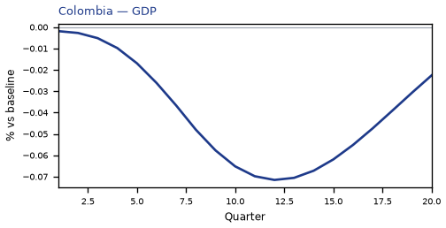
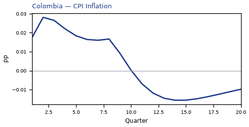
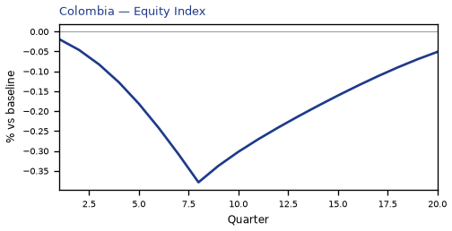
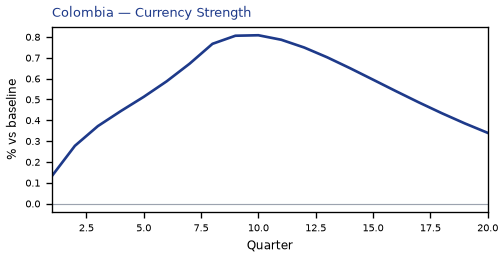
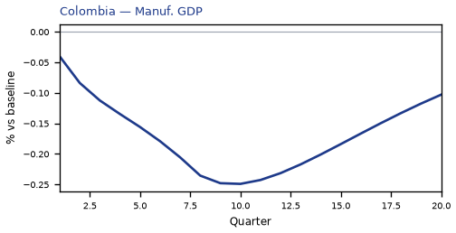
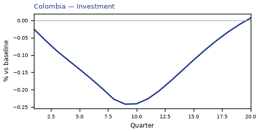
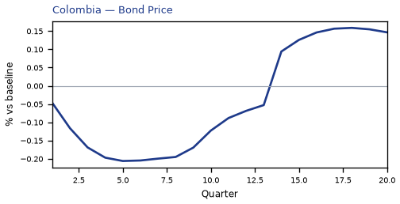
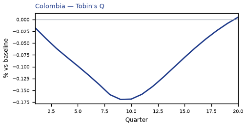
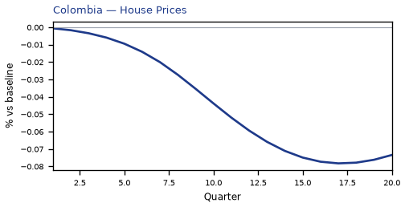
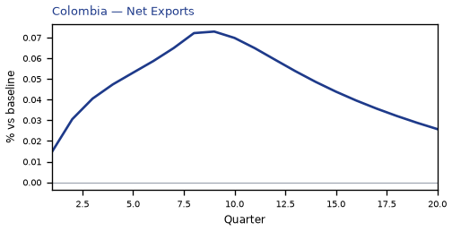
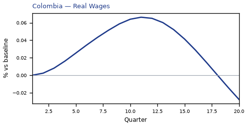
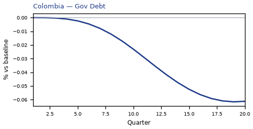
source=live · global_macro_v5 · contract v6 · Q1–Q20 JSON · not financial advice